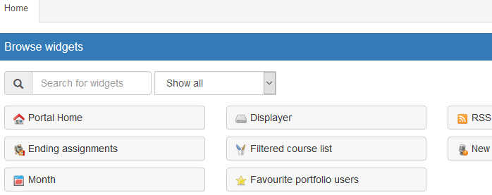
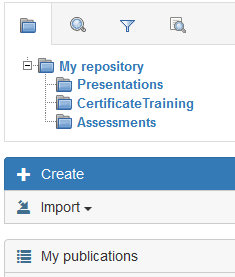
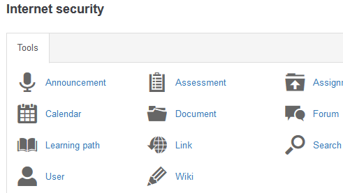

ABOUT COSNICS
Cosnics offers a state of the art training and collaboration platform. All users in Cosnics have their own personal drive: content can be created, published or shared from this repository.
Manage your traning in a fast and flexible way with Cosnics! In Cosnics users can easily connect to each other and integrate external repositories using workspaces.
Cosnics is formerly known as Chamilo LCMS Connect.
COSNICS
Cosnics is developed using the latest standards and technology. This opensource project is not only ready for the future, it is part of the future!
|
CONNECTIVITY |
MODULARITY |
|
REPOSITORY |
COLLABORATION |
|    |
DOCUMENTATION
Get the installation manual here:
Get your user information on our documentation website:
SUPPORT AND CONTACT
Before submitting a problem, please check the installation manual for an overview of the most common problems and known issues.
For support information, go to the Github pages: